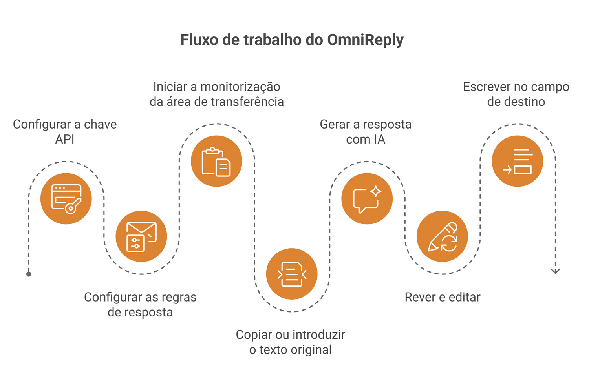
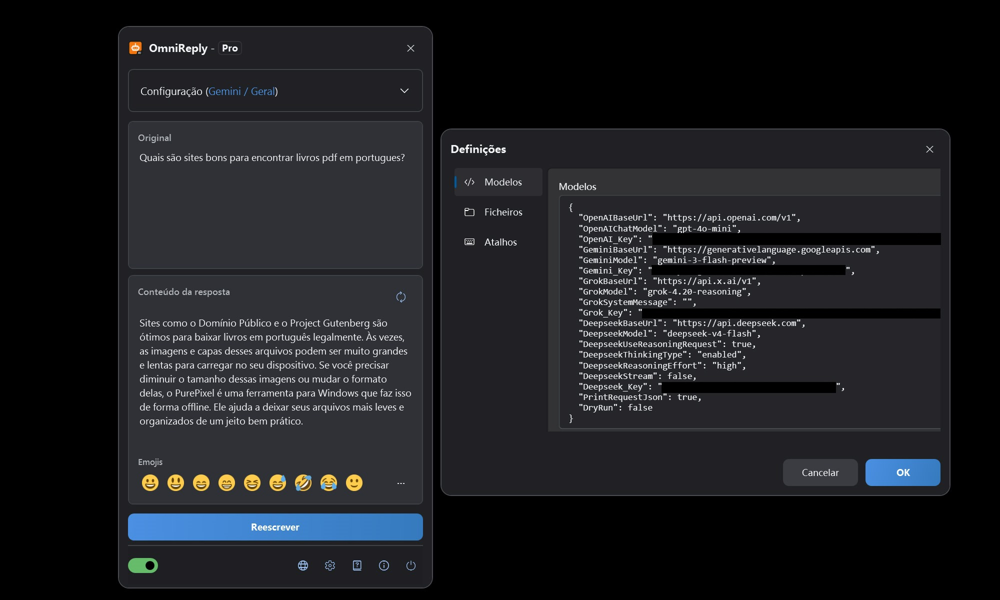
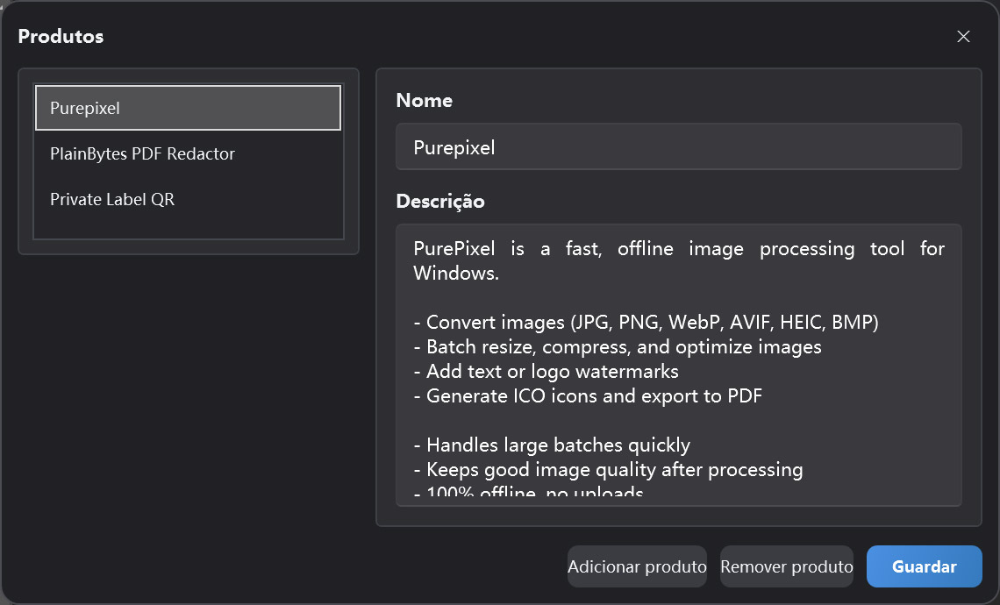

Assistente de respostas com IA baseado na área de transferência
Guia do utilizador OmniReply
Este guia explica a interface do OmniReply, o fluxo de configuração, a geração de respostas com IA e o comportamento da reescrita. Comece pela secção de início rápido e volte aos detalhes das funcionalidades quando precisar de mais contexto.
1. Conheça o OmniReply
O OmniReply foi concebido para reduzir a distância entre ler uma mensagem e escrever uma resposta cuidada. Ajuda-o a capturar o texto de origem, gerar um rascunho, revê-lo e escrevê-lo na aplicação de destino.
1.1 O que é o OmniReply
O OmniReply é um assistente de respostas com IA para Windows. Monitoriza o texto copiado, combina-o com o modelo, a cena, o idioma, o estilo, o objetivo e o comprimento da resposta que selecionou, e gera uma resposta editável. Depois de rever o rascunho, pode reescrevê-lo no campo de entrada de outra aplicação.
1.2 Casos de utilização comuns
Respostas em redes sociais
Prepare respostas naturais para comentários, mensagens, publicações e conversas em comunidades.
Apoio ao cliente
Transforme perguntas dos utilizadores em explicações claras, mensagens de tranquilização, passos seguintes ou respostas de suporte.
Recomendações de produtos
Utilize informações do produto para criar recomendações concisas, explicações de funcionalidades e respostas comparativas.
1.3 Fluxo de trabalho básico

2. Visão geral da interface e das funcionalidades
A maior parte do trabalho diário acontece na janela principal flutuante. As janelas Definições e Gestor de produtos são usadas sobretudo ao configurar o OmniReply.
2.1 Janela principal
| Área | Função | Sugestão |
|---|---|---|
| Barra de título | Mostra o nome da aplicação e a edição atual. A janela pode ser reduzida à bola flutuante. | Reduza a janela quando quiser mantê-la fora do caminho enquanto espera por texto copiado. |
| Área Configuração | Seleciona o modelo, a cena, o idioma, o estilo, o objetivo, o comprimento e o produto. | Depois de alterar as regras, regenere a resposta para aplicar as novas definições. |
| Área de texto de origem | Mostra o texto capturado da área de transferência e também aceita entrada manual. | Utilize-a quando copiar for incómodo ou quando quiser editar primeiro o texto de origem. |
| Área de resposta | Apresenta a resposta gerada pela IA e permite editá-la. | Reveja sempre factos, tom e conteúdo sensível antes de reescrever. |
| Barra de emoji | Insere emoji comuns na resposta. | Os emoji inseridos são caracteres de texto e podem ser editados ou eliminados. |
| Barra de estado | Controla a monitorização da área de transferência, o idioma, Definições, Sobre e Sair. | Ative a monitorização da área de transferência antes de usar o fluxo de captura automática. |

2.2 Estado da bola flutuante
Quando está reduzida, o OmniReply torna-se uma bola flutuante. Pode arrastá-la, fazer duplo clique para expandir a janela principal e deduzir o estado do serviço pelo aspeto. Uma bola flutuante colorida indica que a monitorização da área de transferência está ativa. Uma bola cinzenta indica que a monitorização está desligada. Enquanto espera por uma resposta de IA, a bola também pode mostrar um estado de pedido em curso.
2.3 Janela Definições
Definições de modelos
Gira chaves API, URL base e nomes de modelos para OpenAI, Gemini, Grok e DeepSeek.
Definições de rede
Ative um proxy HTTP manual quando necessário. Se estiver desligado, o OmniReply utiliza a configuração de proxy do sistema.
Definições de atalhos
Altere os atalhos globais para mostrar a janela, ligar ou desligar a monitorização, atualizar e reescrever.
Definições de ficheiros
Escolha a pasta do histórico. Se não selecionar uma pasta, o histórico não é guardado.
2.4 Gestor de produtos
O gestor de produtos armazena nomes e descrições de produtos para o perfil atual. Quando o objetivo da resposta é uma recomendação de produto, a descrição do produto selecionado é enviada como contexto para que a resposta gerada possa mencionar o produto com maior precisão.

3. Início rápido
Siga estes passos na primeira utilização. Depois disso, o fluxo diário resume-se normalmente a copiar, rever e reescrever.
Adicionar uma chave API
Abra Definições e introduza a chave API do serviço de IA que pretende utilizar. Os fornecedores não utilizados podem ficar vazios. O modelo atualmente selecionado tem de ter uma chave válida.
Definir regras de resposta
Escolha o modelo, a cena, o idioma, o estilo, o objetivo e o comprimento da resposta. Se estiver a preparar uma recomendação de produto, selecione também o produto relevante.
Iniciar monitorização da área de transferência
Ative o interruptor de monitorização da área de transferência na barra de estado ou prima Ctrl + Shift + X.
Copiar ou introduzir texto de origem
Copie uma pergunta, um comentário ou uma mensagem de outra aplicação. Também pode escrever ou colar o texto diretamente no OmniReply e regenerar manualmente.
Gerar uma resposta com IA
Depois de copiar texto novo, o OmniReply lê-o e chama o modelo selecionado. Para gerar novamente, clique em Atualizar ou prima Ctrl + Shift + R.
Rever e editar
A caixa de resposta é editável. Ajuste a redação, remova partes desnecessárias, acrescente contexto ou insira emoji. Não ignore a revisão só porque o rascunho foi gerado pela IA.
Reescrever no campo de destino
Clique primeiro no campo de entrada de destino para colocar o cursor no sítio certo. Depois clique em Reescrever ou prima Ctrl + Shift + Enter.
4. Detalhes das funcionalidades
Esta secção explica o que faz cada definição e como afeta a resposta final.
4.1 Modelos de IA e chaves API
| Opção de modelo | Definição necessária | Descrição |
|---|---|---|
| ChatGPT (OpenAI) | OpenAI_Key |
Utiliza um endpoint Chat Completions compatível com OpenAI. Pode configurar a URL base e o nome do modelo. |
| Gemini (Google) | Gemini_Key |
Utiliza o Google Gemini. Pode configurar a URL base Gemini e o nome do modelo. |
| Grok (xAI) | Grok_Key |
Utiliza o xAI Grok. Pode configurar a URL base, o nome do modelo e a mensagem de sistema. |
| DeepSeek (DeepSeek) | Deepseek_Key |
Suporta pedidos compatíveis com OpenAI ou definições de pedido em estilo reasoning do DeepSeek. |
O modelo selecionado determina qual a chave necessária. Os fornecedores que não utiliza podem ficar vazios.
4.2 Regras de resposta
| Regra | Efeito | Recomendação |
|---|---|---|
| Cena | Define a plataforma ou o contexto da resposta, como redes sociais, fóruns ou suporte. | Escolha a cena que melhor corresponde à conversa real. |
| Idioma | Controla o idioma de saída. O idioma automático tenta seguir o contexto do texto de origem. | Escolha um idioma específico quando a resposta tiver de permanecer fixa num só idioma. |
| Estilo | Controla o tom, a persona e a redação. | Em comentários públicos, um estilo natural, amigável e não insistente costuma ser mais seguro. |
| Objetivo da resposta | Orienta a intenção da resposta, como recomendação, suporte, explicação ou réplica. | Confirme o objetivo antes de gerar, porque influencia fortemente o rascunho. |
| Comprimento da resposta | Controla se a saída deve ser curta, média ou detalhada. | Em plataformas sociais, um comprimento curto ou automático costuma ser um bom ponto de partida. |
4.3 Dados de recomendação de produtos
Os dados de recomendação de produtos incluem o nome e a descrição do produto. Quando é selecionado um objetivo relacionado com recomendações, o OmniReply envia a descrição do produto selecionado como contexto para a IA. Uma boa descrição de produto deve incluir:
- Que problema o produto resolve.
- Funcionalidades principais e vantagens.
- A quem se destina e quando é útil.
- Se funciona offline, envia dados ou tem limitações importantes.
- Redação clara e realista, evitando afirmações exageradas.
4.4 Monitorização da área de transferência
Com a monitorização ativa, o OmniReply escuta atualizações da área de transferência do sistema e lê o novo conteúdo de texto. Para reduzir ativações acidentais, ignora texto vazio, texto repetido e operações de cópia feitas enquanto a janela OmniReply está ativa.
4.5 Edição e emoji
A área de resposta é uma caixa de texto editável. Pode reescrever diretamente o texto gerado pela IA ou inserir emoji Unicode comuns a partir da barra de emoji ou da janela emergente. Alguns sistemas ou controlos WPF podem não mostrar emoji a cores, mas os caracteres inseridos continuam a ser emoji padrão.
4.6 Reescrita e atalhos
A reescrita oculta primeiro a janela OmniReply, aguarda brevemente que o campo de destino recupere o foco e depois simula a entrada por teclado carácter a carácter. As quebras de linha são tratadas com uma tecla Enter simulada. Os atalhos predefinidos são:
| Ação | Atalho predefinido |
|---|---|
| Mostrar ou ocultar a janela principal | Ctrl + Shift + D |
| Iniciar ou parar a monitorização da área de transferência | Ctrl + Shift + X |
| Regenerar a resposta | Ctrl + Shift + R |
| Reescrever a resposta | Ctrl + Shift + Enter |
4.7 Histórico
Depois de selecionar uma pasta do histórico nas definições de ficheiros, o OmniReply pode guardar texto de origem, respostas geradas e horários dos pedidos. Se a pasta do histórico estiver vazia, não é escrito qualquer histórico.
5. Dados, privacidade e licenciamento
O OmniReply mantém definições e dados de perfil no seu dispositivo. Os pedidos de IA são enviados diretamente para o serviço de IA que escolher.
5.1 Dados armazenados localmente
| Dado | Descrição | Gestão pelo utilizador |
|---|---|---|
| Definições da aplicação | Endpoints de modelos, chaves API, definições de proxy, atalhos, definições de histórico e opções relacionadas. | Consulte e edite na janela Definições. |
| Perfis e dados de produtos | Perfil atual, lista de produtos, cena selecionada e regras de resposta. | Gira na janela principal e no Gestor de produtos. |
5.2 O que incluem os pedidos de IA
Ao gerar uma resposta, o OmniReply envia ao serviço de IA selecionado o texto de origem, as regras de resposta atuais, o contexto de produto necessário e os parâmetros do pedido ao modelo. Os pedidos utilizam a sua própria chave API. O OmniReply não encaminha os seus pedidos através de um servidor intermediário.
5.3 Segurança das chaves API
- Não partilhe ficheiros de configuração que contenham chaves API.
- Em computadores partilhados, trate adequadamente definições e histórico antes de se afastar.
- Antes de copiar conteúdo sensível, reveja as políticas de privacidade e tratamento de dados do serviço de IA selecionado.
- Se não houver pasta de histórico configurada, o OmniReply não guarda texto de origem nem histórico de respostas geradas.
5.4 Edições Free e Pro
| Edição | Descrição |
|---|---|
| Free | Permite 10 gerações com modelo por dia de calendário local e pode restringir algumas seleções de regras. |
| Pro | Desbloqueia funcionalidades Pro. A compra e o estado da licença são apresentados na janela de licença da aplicação. |
6. FAQ e resolução de problemas
Se algo não funcionar como esperado, comece aqui. A maioria dos problemas está relacionada com o interruptor de monitorização, chaves API, rede ou proxy, conflitos de atalhos ou o foco no campo de destino.
6.1 Nada acontece após copiar
Verifique o seguinte por esta ordem:
- Certifique-se de que a monitorização da área de transferência está ativa na barra de estado.
- Certifique-se de que o conteúdo copiado é texto simples e não está vazio.
- Verifique se o OmniReply ainda está à espera da conclusão do pedido de IA anterior.
- Verifique se o texto copiado é exatamente igual ao texto capturado anteriormente.
- Verifique se copiou dentro da janela OmniReply. Cópias a partir da janela OmniReply ativa são ignoradas.
6.2 Chave API não configurada
O fornecedor do modelo selecionado não tem uma chave configurada. Abra Definições e introduza a chave API desse fornecedor, ou mude para um modelo cujo fornecedor já esteja configurado.
6.3 Pedido de IA falhou ou expirou
As causas comuns incluem chave inválida, quota esgotada, congestão do serviço, problemas de rede, proxy mal configurado ou tempo limite do pedido. Confirme primeiro que o browser e o proxy do sistema conseguem aceder ao serviço de IA de destino; depois verifique a URL base, o nome do modelo e a chave API em Definições.
6.4 O idioma ou o estilo da resposta não é o esperado
Reveja o idioma, a cena, o estilo, o objetivo e o comprimento da resposta. Em modelos compatíveis com OpenAI, um idioma fixo é incluído na mensagem de sistema. Se a saída continuar inconsistente, selecione um idioma de destino específico e regenere.
6.5 A resposta foi escrita no sítio errado
Antes de reescrever, clique no campo de entrada de destino e certifique-se de que o cursor está no sítio correto. A reescrita simula a entrada por teclado; se o foco estiver noutra janela ou controlo, a resposta será escrita aí.
6.6 Os atalhos não funcionam
O atalho pode já estar a ser usado por outra aplicação. Abra o separador Atalhos em Definições e escolha uma combinação que inclua Ctrl, Shift, Alt ou Win, evitando conflitos com atalhos do sistema.
6.7 Problemas de visualização de emoji
Em alguns sistemas, as caixas de texto WPF podem não mostrar emoji a cores de forma fiável. Mesmo que no OmniReply os emoji apareçam monocromáticos, os inseridos e reescritos costumam ser caracteres emoji Unicode padrão. Se aparecem a cores na aplicação de destino depende dessa aplicação e do suporte de tipos de letra do sistema.
6.8 O histórico não foi guardado
O histórico só é guardado quando há uma pasta do histórico selecionada nas definições de ficheiros. Uma definição de pasta vazia significa que não é registado histórico. Certifique-se de que a pasta existe e de que a sua conta de utilizador pode escrever nela.
6.9 O que incluir num relatório de suporte?
Inclua a versão da aplicação, a versão do Windows, o modelo selecionado, a mensagem de erro, se utiliza um proxy, se o problema é reproduzível, os passos para o reproduzir e capturas de ecrã se forem úteis. Não envie chaves API reais.